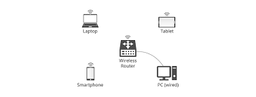

A router is a device that forwards data packets between computer networks, ensuring that data travels across the appropriate paths to reach its destination. This device is a data traffic control manager as it connects multiple networks and directs data traffic to ensure efficient communication - whether you're at home, school, work, or another larger setup.
Since WiFi is a big part of our lives, why not understand how a WiFi router works? Overall, there are 3 main steps.
A WiFi router typically connects to your ISP (internet service provider) via a modem, which receives internet signal from the ISP. The modem sends the connection to your router.
After receiving the connection from the modem, the WiFi router performs the same routing function as a regular router - it directs data packets to the correct device using IP addresses.
WiFi routers transmit and receive data using radio waves (wireless), which allows wireless communication between the router and the WiFi - enabled devices. The router has antennas built on specific frequencies and devices like smartphones and laptops have built-in wireless network adapters that communicate with the router using these frequencies.
Network path redundancy ensures that a network remains functioning even when certain devices or paths fail. It's a key strategy for improving the reliability and fault tolerance of a network and is achieved by implementing backup systems that take over in case of failure.
Finally, you might already have an idea of what packets are (they were previously mentioned in the other sections). Packets are small units of data that are transmitted over a network - whether it was sent by the router or being rerouted through the path redundancy technique. Here's a more detailed explanation of how packets work in the internet:
Packets typically consist of three parts:
When you send a large file or message over the internet, it is divided into multiple packets. Each packet can take a different route to reach its destination, depending on network conditions (such as congestion or failure). When packets arrive at the destination, they are reassembled in the correct order.